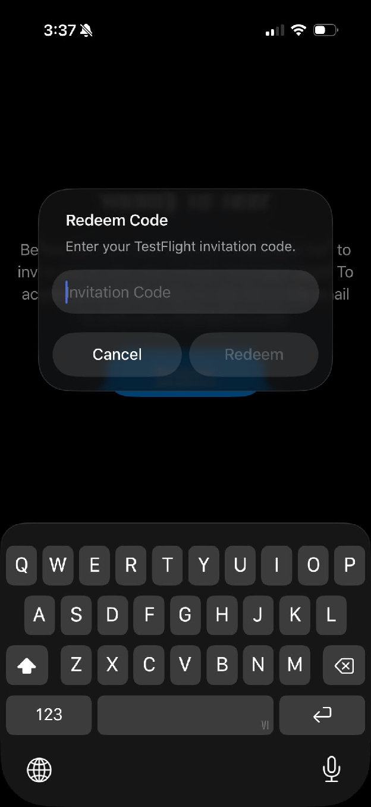
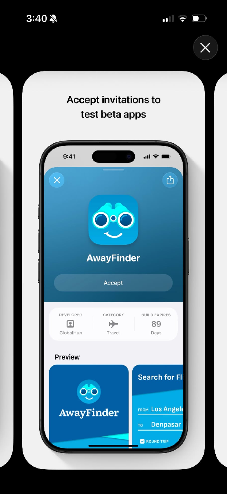
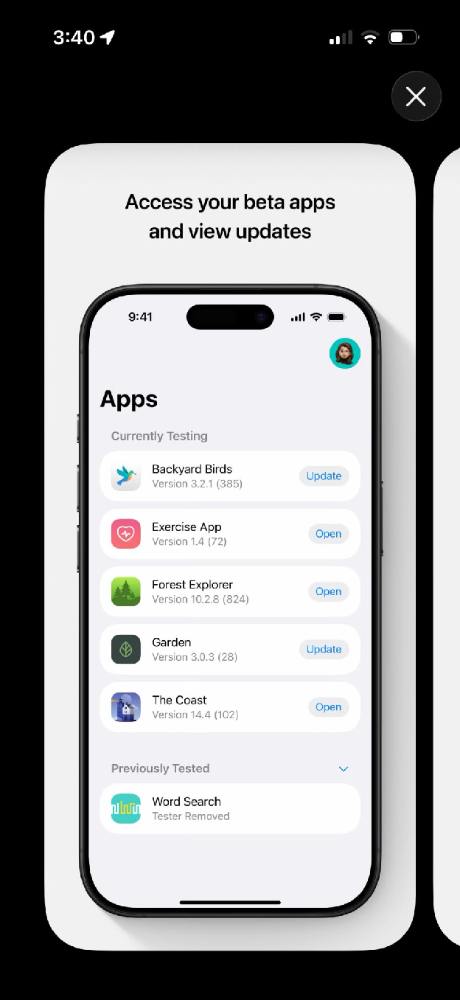

TRỞ THÀNH TESTER
Cùng Lyrion.
Tốt hơn mỗi ngày.
Trải nghiệm những tính năng đầu tiên, chia sẻ điều bạn nghĩ và cùng chúng mình hoàn thiện LyrionFitness.
Lời mời TestFlight chưa mở. Đăng ký sớm để nhận tin từ Lyrion.
-
Tải TestFlight
TestFlight là ứng dụng của Apple giúp bạn dùng thử các phiên bản mới trước khi phát hành. Hãy cài TestFlight trên chiếc iPhone bạn sẽ dùng để thử Lyrion.
Mở TestFlight trên App StoreChọn Nhận (Get) hoặc biểu tượng đám mây để tải. Sau đó mở TestFlight và hoàn tất phần chào mừng.
 Chạm biểu tượng đám mây để tải
Chạm biểu tượng đám mây để tảiĐúng ứng dụng TestFlight, nhà phát triển Apple. -
Mở lời mời thử nghiệm
Khi có lời mời, hãy mở liên kết ngay trên iPhone đã cài TestFlight. Nếu nhận qua email, chạm View in TestFlight để tiếp tục.
Đăng ký sớmLời mời TestFlight chưa mở. Bạn có thể đăng ký sớm để nhận tin từ Lyrion.

Chỉ nhập mã được gửi trong lời mờiNếu thấy “Redeem Code” nhưng không có mã, hãy quay lại và mở đường dẫn mời trên iPhone. -
Tham gia chương trình thử nghiệm
Kiểm tra lời mời có tên LyrionFitness. Đọc thông tin thử nghiệm, rồi chạm Accept (Chấp nhận) để tham gia.
Nếu lời mời báo đã đủ người hoặc chưa có bản tương thích, hãy chờ đợt thử nghiệm tiếp theo.
Accept = Chấp nhận lời mời
Chạm Accept dưới tên ứng dụngẢnh TestFlight của Apple minh họa bằng AwayFinder. Lời mời của bạn sẽ mang tên LyrionFitness. -
Cài đặt LyrionFitness
Trong trang LyrionFitness trên TestFlight, chạm Install (Cài đặt). Đợi tải xong rồi chọn Open (Mở) để bắt đầu.
Lần sau, bạn sẽ tìm thấy LyrionFitness trong danh sách Apps. Chọn Update (Cập nhật) khi có phiên bản thử nghiệm mới.
Install → Open → Sẵn sàng trải nghiệm
Mở hoặc cập nhật ứng dụng tại đâyDanh sách ứng dụng minh họa của Apple. Sau khi tham gia, hãy chọn LyrionFitness trong TestFlight. -
Bắt đầu sử dụng và gửi phản hồi
Thử tạo kế hoạch tập, ghi lại bữa ăn và theo dõi tiến độ. Điều gì hữu ích? Chỗ nào khiến bạn bối rối? Chúng mình muốn được nghe từ bạn.
Để gửi góp ý, mở TestFlight → LyrionFitness → Send Beta Feedback. Viết mô tả, đính kèm ảnh nếu cần, rồi chạm Submit (Gửi).

MỖI GÓP Ý ĐỀU CÓ Ý NGHĨA
Kể chúng mình nghe.
- Bạn đang thực hiện thao tác nào?
- Điều gì đã xảy ra?
- Bạn mong đợi điều gì?
Một ảnh chụp màn hình và vài dòng mô tả sẽ giúp chúng mình hiểu nhanh hơn.
HẸN BẠN TRONG LYRION
Bắt đầu từ một góp ý.
Cùng tạo nên điều tốt hơn.
Lời mời TestFlight chưa mở. Đăng ký sớm để nhận tin từ Lyrion.
Đăng ký sớm Xem hướng dẫn TestFlight của Apple